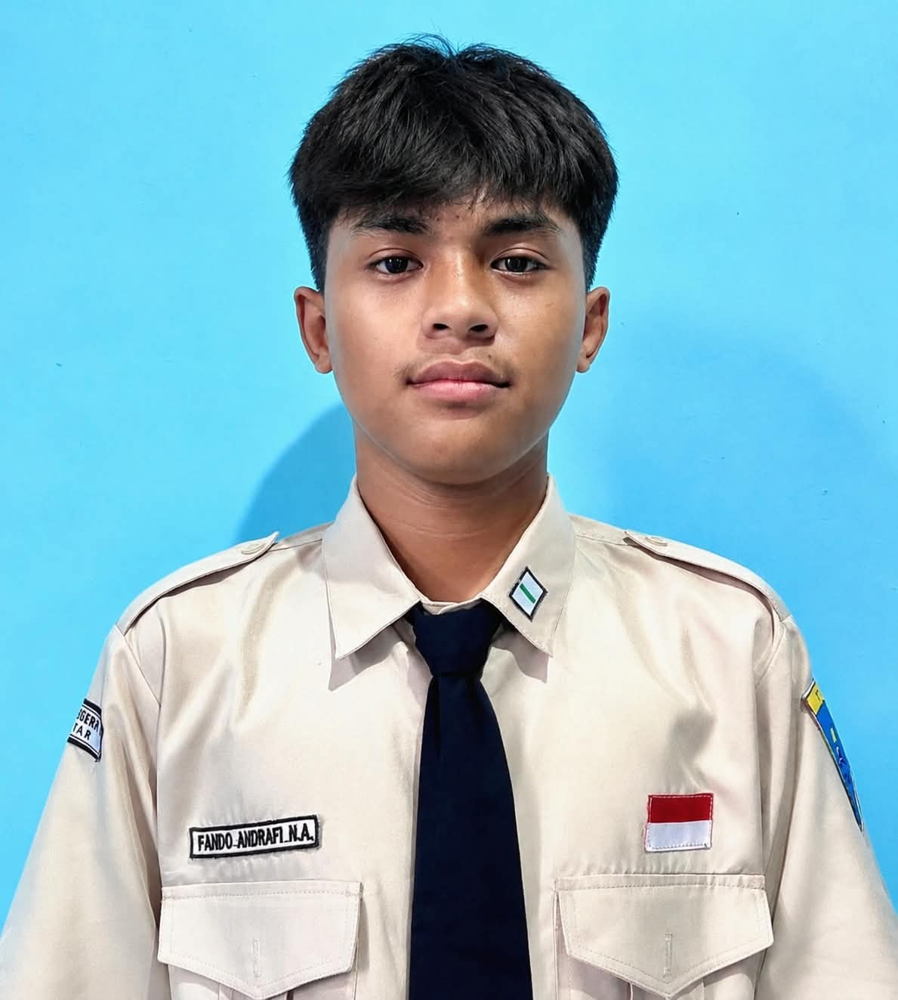
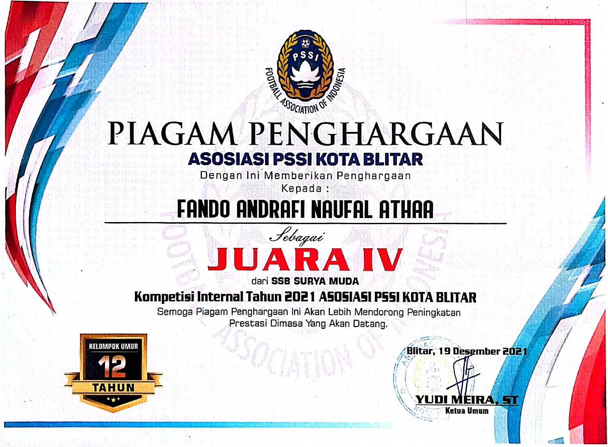
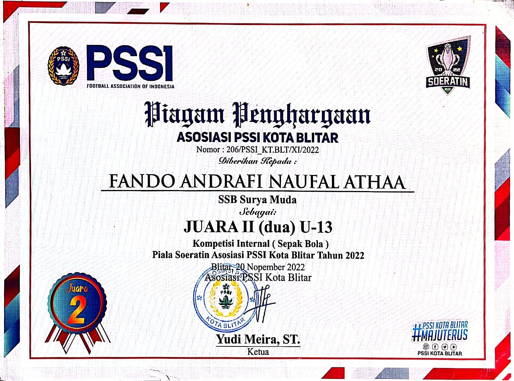
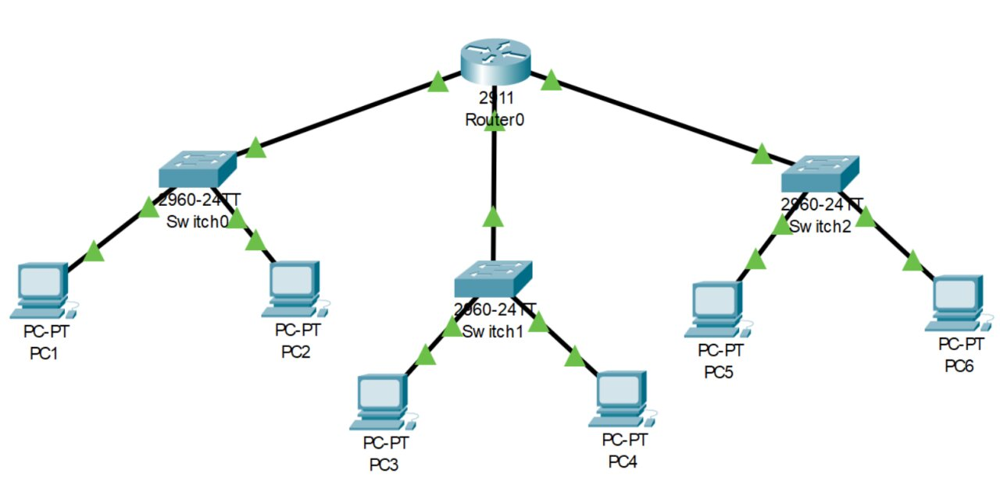
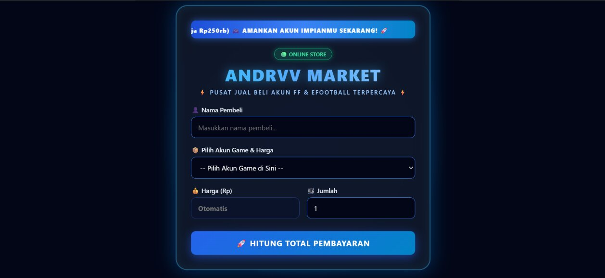
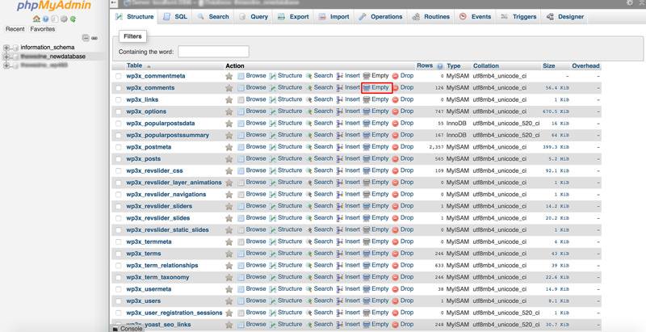

|
Nama: Fando Andrafi Naufal Athaa
Kelas: XI TJKT 1
Absen: 24
Sekolah: SMKN 1 Blitar
Berfokus pada administrasi jaringan komputer, konfigurasi router, perancangan database SQL, serta aktif di SSB Surya Muda.
Klik gambar sertifikat untuk memperbesar tampilan

Asosiasi PSSI Kota Blitar • 20 November 2022

Asosiasi PSSI Kota Blitar • 19 Desember 2021

Dokumentasi konfigurasi static routing dan manajemen bandwidth jaringan lokal.
Networking
Pengembangan halaman web responsif berbasis HTML, CSS, dan JavaScript.
Web Development
Perancangan tabel relasional, query DDL/DML, serta manajemen hak akses user pada MariaDB.
Database